우선 BITNAMI란 뭘까?
클라이언트에게 단 한번의 설치로 Windows 혹은 Linux에 서버엔진,웹서버,데이터베이스서버를 설치해주고 연동해주고 management를 사용하여 전체적인 관리까지 병행하는 소프트웨어 입니다.
우선 시작하기 전에 저처럼 멍청하게 하지마시고 먼저 Bitnami 사용법을 검색해보세요! -> 검색
윈도우 운영체제로는 bitnami - WAMP Stack이 가장 대중적으로 사용되죠.
WAMP?
W : Windows
A : Apache
M : MySQL
P : Php
특징.
편하게 사용하기엔 제일 좋다.
심지어 너무 편하고 관리하기도 용이하다.
시간을 절약할 수 있다.
제가 위에 적었음에도 불구하고 아래로 눈길을 주셨다면 APM 설치방법, 윈도우10 APM설치, APACHE2 PHP7 MYSQL8 등으로 검색해서 들어오신 분들이겠죠.
그럼 불편한 길로 APM을 설치해봅시다.
APM?
A : Apache
P : Php
M : MySQL
APM은 직접 모든 프로그램을 설치하고 연동해야하며 서버또한 직접 CLI를 통해, 혹은 OS의 서비스관리 프로그램을 사용해 관리해야 합니다.
환경변수도 직접 입력해야 하고, 기본 설치파일도 본인이 직접 수정해야 해요. 안되면 또 찾아서 해야하고요. 저도 혼자서 검색해가면서 문제를 해결하다가 5시간을 보냈습니다. 인생...
그래서 지금부터 적어봅니다.
'윈도우10(64비트) 최신릴리즈에서 APM 최신버전으로 설치하고 때려박아 연동하고 실행하기 - 1'
*지금부터 하는 모든 과정은 지극히 주관적인 설치과정입니다. 안되면 같이 찾아보고 해결해봅시다. 32비트는 똑같이 따라하셔도 어떤 문제가 발생할 지 모릅니다.
궁금증이 생긴다면 검색을 하는 습관을 기릅시다!
**검색이 필요한 부분인 것 같다고 생각되는 곳에 표시를 해놨습니다!
1)먼저 작업 전에 준비물이 필요하겠죠? 우선 다운로드만! 합니다.
설치위치는 모두 자유롭게 받으시면 됩니다.
모든 설치에 앞서 무조건적으로 확인해야 될 것은 바로 자신의 운영체제와 맞냐-안맞냐입니다.(32비트:86 / 64비트:64)
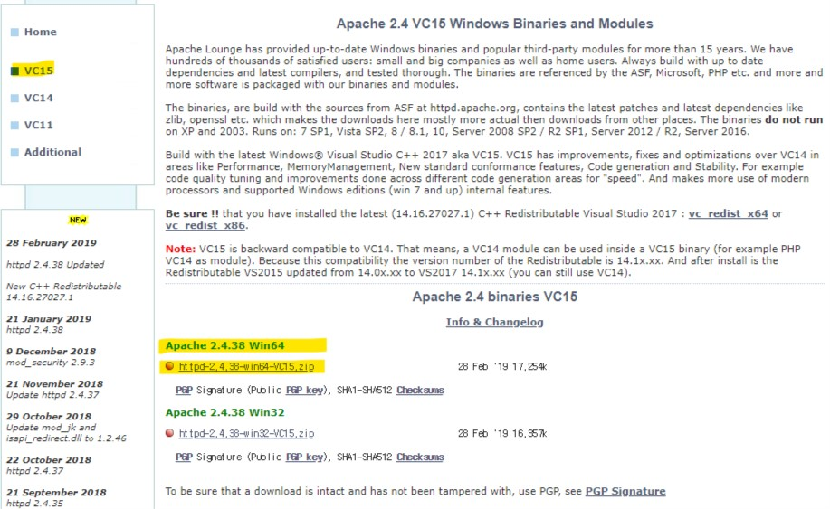
'VC15'를 확인하고 설치파일을 다운 받습니다.
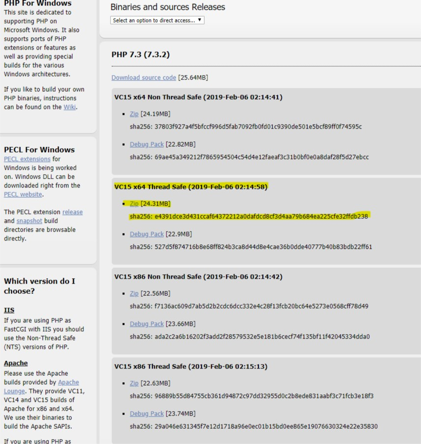
성능저하의 문제점을 개선한 것이 Non Thread Safe방식입니다.
하지만 Windows에 호환이 잘되는 건 Thread Safe버전이라고 하니 Thread Safe 로 다운 받습니다. -> 검색
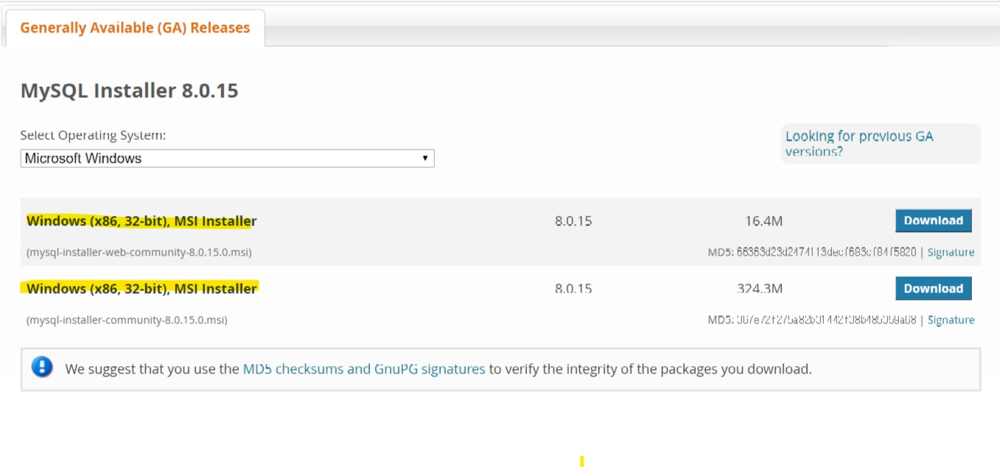
이건 둘 다 통합 설치 프로그램입니다. 32bit 밖에 없으니 다운받으세요.
2)먼저 아파치를 설치 해봅시다.
다운로드 받은 압축파일을 원하는 위치에 풀어줍니다. 지금부터 작업영역은 "D:\workspaces"로 통일합니다.
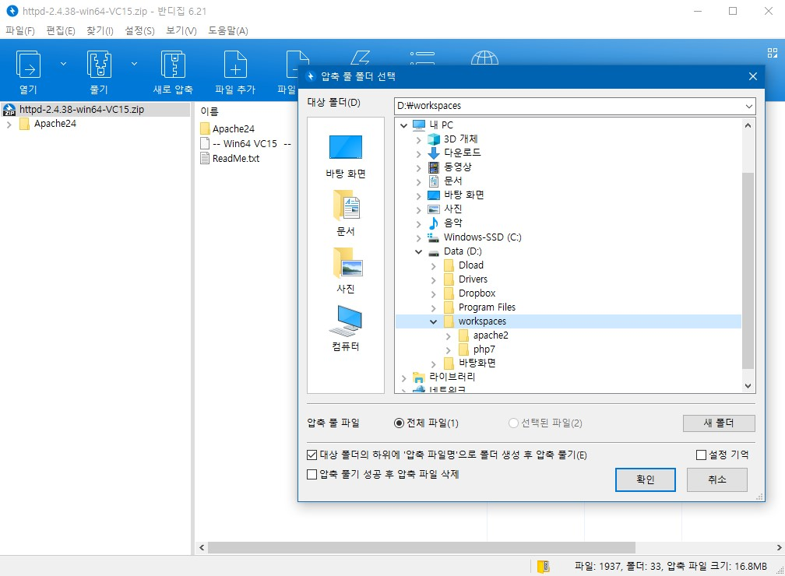
그 다음, 본인이 알기 쉽게 폴더이름을 바꿔줍니다.
나중에 그 경로로 바로바로 들어가기 쉽게!
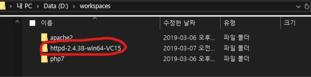
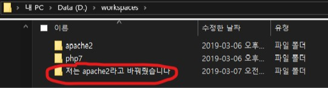
메모장을 켜서 "~"\apache2\Apache24\conf로 들어가서 httpd.conf파일을 끌어와 열어줍니다. 그리고 아래 노랗게 칠한 부분을 ctrl+f로 키워드를 검색해 찾아가 각자의 작업영역으로 지정해줍니다.
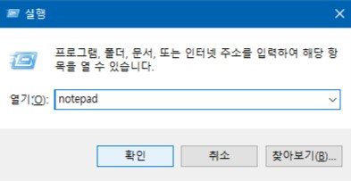
검색으로 "Define SRVROOT" 를 했을 때 안나온다면 위와 같이 새롭게 정의해주고 그 정의된 변수?를 위와 같이 ServerRoot 에 "${SRVROOT}"로 입력해주세요.
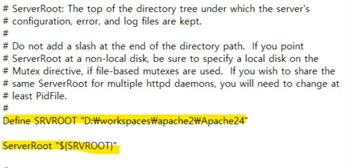
그 다음엔 "포트"를 한번 확인해주세요. -> 검색
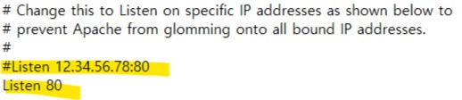
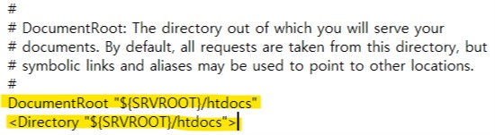
그리고 환경변수도 설정해주세요.
win + s : "환경" 키워드 입력 >
시스템 환경 변수 편집 >
환경변수 >
사용자변수 및 시스템 변수에서 Path를 클릭 >
"본인작업영역"\Apache24\bin 으로 추가.(제가 본 설명에선 시스템변수에만 추가하라고 했는데 저는 제대로 실행이 안돼서 둘 다 추가했습니다) >
그리고 확인
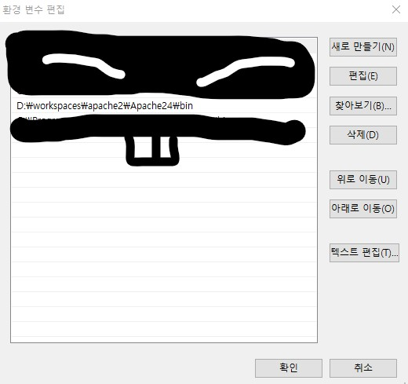
관리자모드로 cmd를 실행합니다.(win + s : cmd) >
오른쪽 마우스로 클릭 또는 아래처럼 나오는 '항목'에서 >
관리자권한으로 실행 >
알림 "예" 클릭
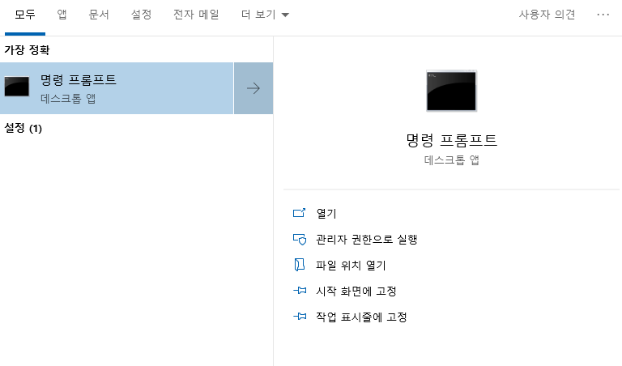
"httpd -k install" 따옴표 빼고 입력해줍니다. -> 검색
이렇게 진행했을 경우, 에러가 발생할 수도 있습니다."[ah00558]"
그리고 전 제발 그 에러가 여러분의 cmd창에 나오기를 간절히 바랬습니다.
혼자서 공부할 때 나오는 에러는 정말 가뭄의 단비처럼 소중하게 생각하세요!
실무에서 나오면 큰일나니까..
다시 httpd.conf파일을 메모장으로 열어 아래와 같이 이메일과 서버 이름을 적어주세요.(이메일은 모르겠는데 서버이름을(localhost or 127.0.0.1) 안적게되면 오류가 발생합니다.-->검색)
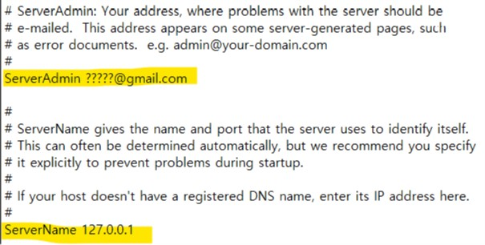
그리고 혹시 모르니 "httpd -k uninstall"을 실행해줍니다. 깔끔하게.
그리고 다시
"httpd -k install" >
"httpd -k start"
를 차례대로 입력해줍니다.
**그리고 명령어에 대해선 cmd창에 "httpd /?"를 검색해주면 간단한 메뉴얼이 나옵니다.
cmd 창 화면에 마치 아무일도 없었다는 듯이 새롭게 커서가 깜빡인다면 실행이 된겁니다.
아래를 클릭해주세요.
그리고 주소창에 127.0.0.1 혹은 localhost를 입력해줬을 때

위 텍스트가 페이지 상에 출력된다면 아파치 설치 성공입니다!
안된다면 그 이유는 차차 함께 찾아보죠. 저도 아무고토 모릅니다ㅎ
수고하셨습니다. 짧지만 고생 하셨어요!
다음 챕터에서 뵙겠습니다.
key word httpd -k start / httpd -k stop
net start mysql80 / net stop mysql80